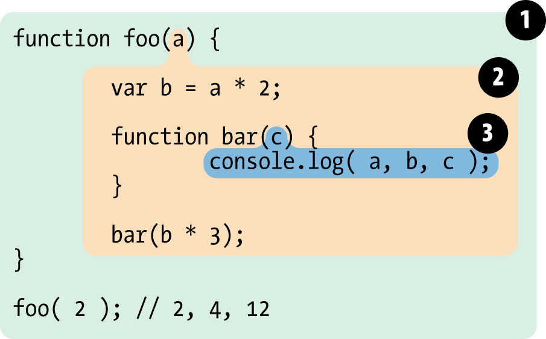

# Chapter 2: Lexical Scope
In Chapter 1, we defined “scope” as the set of rules that govern how the Engine can look up a variable by its identifier name and find it, either in the current Scope, or in any of the Nested Scopes it’s contained within.
There are two predominant models for how scope works. The first of these is by far the most common, used by the vast majority of programming languages. It’s called Lexical Scope, and we will examine it in-depth. The other model, which is still used by some languages (such as Bash scripting, some modes in Perl, etc) is called Dynamic Scope.
Dynamic Scope is covered in Appendix A. I mention it here only to provide a contrast with Lexical Scope, which is the scope model that JavaScript employs.
As we discussed in Chapter 1, the first traditional phase of a standard language compiler is called lexing (aka, tokenizing). If you recall, the lexing process examines a string of source code characters and assigns semantic meaning to the tokens as a result of some stateful parsing.
It is this concept which provides the foundation to understand what lexical scope is and where the name comes from.
To define it somewhat circularly, lexical scope is scope that is defined at lexing time. In other words, lexical scope is based on where variables and blocks of scope are authored, by you, at write time, and thus is (mostly) set in stone by the time the lexer processes your code.
Note: We will see in a little bit there are some ways to cheat lexical scope, thereby modifying it after the lexer has passed by, but these are frowned upon. It is considered best practice to treat lexical scope as, in fact, lexical-only, and thus entirely author-time in nature.
Let’s consider this block of code:
function foo(a) { var b = a * 2; function bar(c) { console.log( a, b, c ); } bar(b * 3); } foo( 2 ); // 2, 4, 12
There are three nested scopes inherent in this code example. It may be helpful to think about these scopes as bubbles inside of each other.

Bubble 1 encompasses the global scope, and has just one identifier in it: foo.
Bubble 2 encompasses the scope of foo, which includes the three identifiers: a, bar and b.
Bubble 3 encompasses the scope of bar, and it includes just one identifier: c.
Scope bubbles are defined by where the blocks of scope are written, which one is nested inside the other, etc. In the next chapter, we’ll discuss different units of scope, but for now, let’s just assume that each function creates a new bubble of scope.
The bubble for bar is entirely contained within the bubble for foo, because (and only because) that’s where we chose to define the function bar.
Notice that these nested bubbles are strictly nested. We’re not talking about Venn diagrams where the bubbles can cross boundaries. In other words, no bubble for some function can simultaneously exist (partially) inside two other outer scope bubbles, just as no function can partially be inside each of two parent functions.
The structure and relative placement of these scope bubbles fully explains to the Engine all the places it needs to look to find an identifier.
In the above code snippet, the Engine executes the console.log(..) statement and goes looking for the three referenced variables a, b, and c. It first starts with the innermost scope bubble, the scope of the bar(..) function. It won’t find a there, so it goes up one level, out to the next nearest scope bubble, the scope of foo(..). It finds a there, and so it uses that a. Same thing for b. But c, it does find inside of bar(..).
Had there been a c both inside of bar(..) and inside of foo(..), the console.log(..) statement would have found and used the one in bar(..), never getting to the one in foo(..).
Scope look-up stops once it finds the first match. The same identifier name can be specified at multiple layers of nested scope, which is called “shadowing” (the inner identifer “shadows” the outer identifier). Regardless of shadowing, scope look-up always starts at the innermost scope being executed at the time, and works its way outward/upward until the first match, and stops.
Note: Global variables are also automatically properties of the global object (window in browsers, etc), so it is possible to reference a global variable not directly by its lexical name, but instead indirectly as a property reference of the global object.
window.a
This technique gives access to a global variable which would otherwise be inaccessible due to it being shadowed. However, non-global shadowed variables cannot be accessed.
No matter where a function is invoked from, or even how it is invoked, its lexical scope is only defined by where the function was declared.
The lexical scope look-up process only applies to first-class identifiers, such as the a, b, and c. If you had a reference to foo.bar.baz in a piece of code, the lexical scope look-up would apply to finding the foo identifier, but once it locates that variable, object property-access rules take over to resolve the bar and baz properties, respectively.
If lexical scope is defined only by where a function is declared, which is entirely an author-time decision, how could there possibly be a way to “modify” (aka, cheat) lexical scope at run-time?
JavaScript has two such mechanisms. Both of them are equally frowned-upon in the wider community as bad practices to use in your code. But the typical arguments against them are often missing the most important point: cheating lexical scope leads to poorer performance.
Before I explain the performance issue, though, let’s look at how these two mechanisms work.
evalThe eval(..) function in JavaScript takes a string as an argument, and treats the contents of the string as if it had actually been authored code at that point in the program. In other words, you can programatically generate code inside of your authored code, and run the generated code as if it had been there at author time.
Evaluating eval(..) (pun intended) in that light, it should be clear how eval(..) allows you to modify the lexical scope environment by cheating and pretending that author-time (aka, lexical) code was there all along.
On subsequent lines of code after an eval(..) has executed, the Engine will not “know” or “care” that the previous code in question was dynamically interpreted and thus modified the lexical scope environment. The Engine will simply perform its lexical scope look-ups as it always does.
Consider the following code:
function foo(str, a) { eval( str ); // cheating! console.log( a, b ); } var b = 2; foo( "var b = 3;", 1 ); // 1, 3
The string "var b = 3;" is treated, at the point of the eval(..) call, as code that was there all along. Because that code happens to declare a new variable b, it modifies the existing lexical scope of foo(..). In fact, as mentioned above, this code actually creates variable b inside of foo(..) that shadows the b that was declared in the outer (global) scope.
When the console.log(..) call occurs, it finds both a and b in the scope of foo(..), and never finds the outer b. Thus, we print out “1, 3” instead of “1, 2” as would have normally been the case.
Note: In this example, for simplicity’s sake, the string of “code” we pass in was a fixed literal. But it could easily have been programatically created by adding characters together based on your program’s logic. eval(..) is usually used to execute dynamically created code, as dynamically evaluating essentially static code from a string literal would provide no real benefit to just authoring the code directly.
By default, if a string of code that eval(..) executes contains one or more declarations (either variables or functions), this action modifies the existing lexical scope in which the eval(..) resides. Technically, eval(..) can be invoked “indirectly”, through various tricks (beyond our discussion here), which causes it to instead execute in the context of the global scope, thus modifying it. But in either case, eval(..) can at runtime modify an author-time lexical scope.
Note: eval(..) when used in a strict-mode program operates in its own lexical scope, which means declarations made inside of the eval() do not actually modify the enclosing scope.
function foo(str) { "use strict"; eval( str ); console.log( a ); // ReferenceError: a is not defined } foo( "var a = 2" );
There are other facilities in JavaScript which amount to a very similar effect to eval(..). setTimeout(..) and setInterval(..) can take a string for their respective first argument, the contents of which are evaluated as the code of a dynamically-generated function. This is old, legacy behavior and long-since deprecated. Don’t do it!
The new Function(..) function constructor similarly takes a string of code in its last argument to turn into a dynamically-generated function (the first argument(s), if any, are the named parameters for the new function). This function-constructor syntax is slightly safer than eval(..), but it should still be avoided in your code.
The use-cases for dynamically generating code inside your program are incredibly rare, as the performance degradations are almost never worth the capability.
withThe other frowned-upon (and now deprecated!) feature in JavaScript which cheats lexical scope is the with keyword. There are multiple valid ways that with can be explained, but I will choose here to explain it from the perspective of how it interacts with and affects lexical scope.
with is typically explained as a short-hand for making multiple property references against an object without repeating the object reference itself each time.
For example:
var obj = { a: 1, b: 2, c: 3 }; // more "tedious" to repeat "obj" obj.a = 2; obj.b = 3; obj.c = 4; // "easier" short-hand with (obj) { a = 3; b = 4; c = 5; }
However, there’s much more going on here than just a convenient short-hand for object property access. Consider:
function foo(obj) { with (obj) { a = 2; } } var o1 = { a: 3 }; var o2 = { b: 3 }; foo( o1 ); console.log( o1.a ); // 2 foo( o2 ); console.log( o2.a ); // undefined console.log( a ); // 2 -- Oops, leaked global!
In this code example, two objects o1 and o2 are created. One has an a property, and the other does not. The foo(..) function takes an object reference obj as an argument, and calls with (obj) { .. } on the reference. Inside the with block, we make what appears to be a normal lexical reference to a variable a, an LHS reference in fact (see Chapter 1), to assign to it the value of 2.
When we pass in o1, the a = 2 assignment finds the property o1.a and assigns it the value 2, as reflected in the subsequent console.log(o1.a) statement. However, when we pass in o2, since it does not have an a property, no such property is created, and o2.a remains undefined.
But then we note a peculiar side-effect, the fact that a global variable a was created by the a = 2 assignment. How can this be?
The with statement takes an object, one which has zero or more properties, and treats that object as if it is a wholly separate lexical scope, and thus the object’s properties are treated as lexically defined identifiers in that “scope”.
Note: Even though a with block treats an object like a lexical scope, a normal var declaration inside that with block will not be scoped to that with block, but instead the containing function scope.
While the eval(..) function can modify existing lexical scope if it takes a string of code with one or more declarations in it, the with statement actually creates a whole new lexical scope out of thin air, from the object you pass to it.
Understood in this way, the “scope” declared by the with statement when we passed in o1 was o1, and that “scope” had an “identifier” in it which corresponds to the o1.a property. But when we used o2 as the “scope”, it had no such a “identifier” in it, and so the normal rules of LHS identifier look-up (see Chapter 1) occurred.
Neither the “scope” of o2, nor the scope of foo(..), nor the global scope even, has an a identifier to be found, so when a = 2 is executed, it results in the automatic-global being created (since we’re in non-strict mode).
It is a strange sort of mind-bending thought to see with turning, at runtime, an object and its properties into a “scope” with “identifiers”. But that is the clearest explanation I can give for the results we see.
Note: In addition to being a bad idea to use, both eval(..) and with are affected (restricted) by Strict Mode. with is outright disallowed, whereas various forms of indirect or unsafe eval(..) are disallowed while retaining the core functionality.
Both eval(..) and with cheat the otherwise author-time defined lexical scope by modifying or creating new lexical scope at runtime.
So, what’s the big deal, you ask? If they offer more sophisticated functionality and coding flexibility, aren’t these good features? No.
The JavaScript Engine has a number of performance optimizations that it performs during the compilation phase. Some of these boil down to being able to essentially statically analyze the code as it lexes, and pre-determine where all the variable and function declarations are, so that it takes less effort to resolve identifiers during execution.
But if the Engine finds an eval(..) or with in the code, it essentially has to assume that all its awareness of identifier location may be invalid, because it cannot know at lexing time exactly what code you may pass to eval(..) to modify the lexical scope, or the contents of the object you may pass to with to create a new lexical scope to be consulted.
In other words, in the pessimistic sense, most of those optimizations it would make are pointless if eval(..) or with are present, so it simply doesn’t perform the optimizations at all.
Your code will almost certainly tend to run slower simply by the fact that you include an eval(..) or with anywhere in the code. No matter how smart the Engine may be about trying to limit the side-effects of these pessimistic assumptions, there’s no getting around the fact that without the optimizations, code runs slower.
Lexical scope means that scope is defined by author-time decisions of where functions are declared. The lexing phase of compilation is essentially able to know where and how all identifiers are declared, and thus predict how they will be looked-up during execution.
Two mechanisms in JavaScript can “cheat” lexical scope: eval(..) and with. The former can modify existing lexical scope (at runtime) by evaluating a string of “code” which has one or more declarations in it. The latter essentially creates a whole new lexical scope (again, at runtime) by treating an object reference as a “scope” and that object’s properties as scoped identifiers.
The downside to these mechanisms is that it defeats the Engine’s ability to perform compile-time optimizations regarding scope look-up, because the Engine has to assume pessimistically that such optimizations will be invalid. Code will run slower as a result of using either feature. Don’t use them.